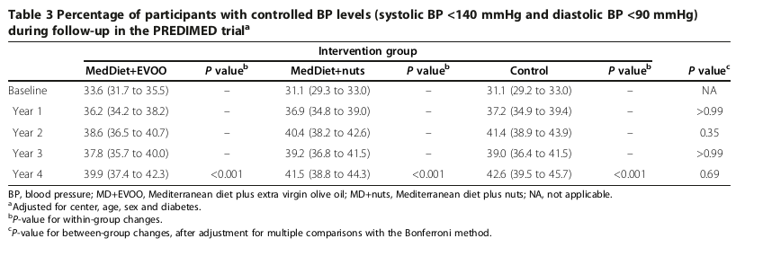

<?xml version="1.0" encoding="UTF-8"?>
<table title="table3" id="table3" class="tabcontent" xmlns="http://www.w3.org/1999/xhtml">
 <tr>
  <td>
   
   <p>../../cm-ucl/corpus-oa-pmr-v02/10.1186_1741-7015-11-207/tables/table3/table.png</p>
  </td>
  <td>
   <table class="table">
    <caption/>
    <tr>
     <th/>
     <th/>
     <th/>
     <th/>
     <th class="cell">MedDiet+EVOO </th>
     <th class="cell">MedDiet+nuts </th>
     <th class="cell">Control </th>
     <th class="cell">P value^{c} </th>
    </tr>
    <tr>
     <td class="cell">Baseline</td>
     <td class="cell">33.6 (31.7 to 35.5)</td>
     <td class="cell">–</td>
     <td class="cell">31.1 (29.3 to 33.0)</td>
     <td class="cell">–</td>
     <td class="cell">31.1 (29.2 to 33.0)</td>
     <td class="cell">–</td>
     <td class="cell">NA</td>
    </tr>
    <tr>
     <td class="cell">Year 1</td>
     <td class="cell">36.2 (34.2 to 38.2)</td>
     <td class="cell">–</td>
     <td class="cell">36.9 (34.8 to 39.0)</td>
     <td class="cell">–</td>
     <td class="cell">37.2 (34.9 to 39.4)</td>
     <td class="cell">–</td>
     <td class="cell">&gt;0.99</td>
    </tr>
    <tr>
     <td class="cell">Year 2</td>
     <td class="cell">38.6 (36.5 to 40.7)</td>
     <td class="cell">–</td>
     <td class="cell">40.4 (38.2 to 42.6)</td>
     <td class="cell">–</td>
     <td class="cell">41.4 (38.9 to 43.9)</td>
     <td class="cell">–</td>
     <td class="cell">0.35</td>
    </tr>
    <tr>
     <td class="cell">Year 3</td>
     <td class="cell">37.8 (35.7 to 40.0)</td>
     <td class="cell">–</td>
     <td class="cell">39.2 (36.8 to 41.5)</td>
     <td class="cell">–</td>
     <td class="cell">39.0 (36.4 to 41.5)</td>
     <td class="cell">–</td>
     <td class="cell">&gt;0.99</td>
    </tr>
    <tr>
     <td class="cell">Year 4</td>
     <td class="cell">39.9 (37.4 to 42.3)</td>
     <td class="cell">&lt;0.001</td>
     <td class="cell">41.5 (38.8 to 44.3)</td>
     <td class="cell">&lt;0.001</td>
     <td class="cell">42.6 (39.5 to 45.7)</td>
     <td class="cell">&lt;0.001</td>
     <td class="cell">0.69</td>
    </tr>
   </table>
   <p>../../cm-ucl/corpus-oa-pmr-v02/10.1186_1741-7015-11-207/tables/table3/table.svg.html</p>
  </td>
 </tr>
</table>
